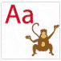
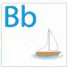
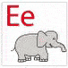
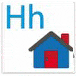
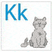
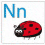
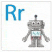
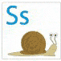

Vad betyder ordet egentligen? Här förklarar vi termer och begrepp som är viktiga för att förstå hur kreditavtal fungerar.

Amortering
Amorteringskrav
Annuitetslån
Amortering eller amorteringstid är den tidsperiod under vilket ett lån skall återbetalas. Vanligen 2-12 år.

Betalningsanmärkning
Beslut av kronofogdemyndigheten om betalningsföreläggande för obetald skuld. Upplysningar från registret hämtas in av bl.a kreditupplysningsföretag. En betalningsanmärkning kvarstår för privatpersoner i tre år.
Blancolån
Ett lån utan säkerhet
Borgensman
En person som ”borgar” alltså garanterat betalningen för ett lån. Borgensmannen tar på sig skyldigheten att kliva in i låntagarens ställe om denne inte kan betala sitt lån. Om man på grund av låg inkomst eller andra orsaker har svårt att få ett lån själv kan banken vilja ha en borgensman för att bevilja lånet.
Borgenär
Den som har lånat ut pengar och därmed kan kräva återbetalning av en låntagare.

Effektiv ränta
Den verkliga kostnaden för ett lån inklusive ränta och alla avgifter uttryckt som en årlig ränta. Långivare måste enligt konsumentkreditlagen informera låntagare om den effektiva räntan.

Lån vars ränta överstiger referensräntan + 30%.

Kredithistorik
Tidigare lån samt hur mycket av beviljade krediter som utnyttjas.
Kreditinstitut
Verksamhet med syfte att erbjuda lån av pengar för konsumentkrediter krävs tillstånd från Finansinspektionen.
Kredit
Är det samma som lån.
Används som underlag för kreditbedömningar.
Sammanställning av privatekonomisk information
Ett kreditupplysningsföretags gradering av kreditvärdighet
Kreditvärdighet
Mäter betalningsförmåga
Den ränta som blir följden av de affärer i växlar och obligationer som sker på den öppna marknaden. Räntan på bostadslån avgörs av bankens kostnad för att låna pengar på marknaden vilket i sin tur är beroende av Riksbankens reporänta (för rörliga lån) och marknadens inflationsförväntningar (för lån med längre bindningstid).
Inkomst från arbete över en miljon kronor om året (83 000 kronor i månadslön)

Nischbank
Mindre aktör med ett begränsat urval av banktjänster. En nischbank har vanligen inget eller begränsat kontorsnät.

Det pris som betalas för att låna eller låna ut ett bestämt belopp uttryckt vanligen som en årlig kostnad. De faktorer som avgör hur högt priset (räntan) blir är bl.a. kreditrisk och inflationsförväntningar.
Reporänta
Den ränta som bankerna betalar för att låna pengar av Riksbanken, reporäntan bestämmer i sin tur räntenivån på bankernas utlåning till allmänheten.

Skuldsanering
Kort kredit (vanligen 30 dagar) till en fast avgift.
Mindre lån med förenklad ansökning och snabb utbetalning.